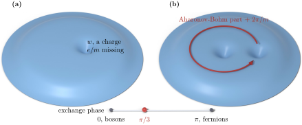

Advanced Quantum Materials 2027 · All lectures · Lecture notes
Session 4. Electrons in a Magnetic Field, Quantum Hall Effect and Landau Levels
4.18 Berry phase, fractional charge, and anyonic statistics
We now use the Berry phase to show directly two things. It is the same object that we used for the Zak phase (3.6) and, as a curvature, for the Chern number (3.4). First, the quasihole excitation of Section 4.17 has a fraction of the electron charge. Second, a pair of them follow neither fermionic nor bosonic exchange statistics.
Fractional charge. We take the wavefunction with one quasihole (4.14) and move \(w\) adiabatically around a closed loop. We write \(w=|w|e^{i\theta}\) and compute the Berry phase that we obtain when \(\theta\) goes from \(0\) to \(2\pi\). The result is an Aharonov-Bohm phase, proportional to the flux enclosed by the loop. It has an extra prefactor \(1/m\) with respect to the phase that an ordinary particle with charge \(e\) would get around the same loop. The Aharonov-Bohm phase for a particle with charge \(q\) around an enclosed flux \(\Phi\) is \(2\pi q\Phi/\Phi_0\), where \(\Phi_0\) is the flux quantum, so the extra factor \(1/m\) that we find is a direct and clear statement about the charge of the excitation,
\[q_{\text{qh}} = \frac{e}{m}. \tag{4.15}\]
For these excitations the electron is no longer the basic unit of charge, and the unit is a real fraction of it.
Anyonic statistics. Now we take a wavefunction with two quasiholes, one fixed at the origin and one at \(w\), and we move the second one in a loop around the first, again with \(w=|w|e^{i\theta}\). The Berry phase that we obtain has two parts. The first part is the same Aharonov-Bohm contribution as before, given by the charge times the enclosed flux. The second part is an additional statistical phase, which comes only from the fact that one quasiparticle goes around the other,
\[\theta_{\text{stat}} = \frac{2\pi}{m}. \tag{4.16}\]
To compare with the familiar cases, note that to move one quasiparticle all the way around another is two exchanges, one after the other, so the exchange phase is half of (4.16), which is \(\pi/m\). For ordinary fermions the exchange of two particles gives a phase \(\pi\), and for bosons it gives a phase \(0\). The exchange phase \(\pi/m\) is neither of the two, and it goes from one familiar case to the other as \(m\) grows, as shown in Figure 4.6. These quasiparticles are what are called anyons, which are excitations with exchange statistics that go continuously from the fermionic to the bosonic case. They are labeled by the same integer \(m\) that fixed the filling fraction. We started from a many-body wavefunction built only from ordinary electrons, which are real fermions, and from the correlations of this wavefunction we obtained excitations that are neither fermions nor bosons. This is the simplest example of fractionalization in a quantum many-body system that we will meet in this course.

For \(m=3\) what are the statistical phase of a full braid of one quasihole around another and the exchange phase?
Show the answers
- A. ✗ False
This is false. These are the phases of two fermions, which is the case \(m=1\). For \(m=3\) the braid phase \(2\pi/m\) is \(2\pi/3\).
- B. ✗ False
This is false. A full braid is two exchanges. If one exchange gave \(2\pi/3\), two of them would give \(4\pi/3\) and not \(2\pi/3\).
- C. ✓ True
This is true. A full braid is two exchanges, so the exchange phase is half of the braid phase \(2\pi/m\), which is \(\pi/m=\pi/3\).
The exchange phase is \(\pi/m\). Which familiar particles do we recover for \(m=1\) and for very large \(m\)?
Show the answers
- A. ✗ False
This is false. For \(m=1\) the phase is \(\pi\), so the wavefunction gets \(e^{i\pi}=-1\), which is a fermion. This is the filled Landau level.
- B. ✗ False
This is false. For \(m=100\) the phase is \(\pi/100\), so the wavefunction gets \(e^{i\pi/100}\approx1\) and not \(-1\). This is almost a boson.
- C. ✓ True
This is true. For \(m=1\) the phase is \(\pi\), which is the fermion, and the Laughlin state is the filled Landau level. For large \(m\) the phase goes to \(0\), which is the boson.
- In Section 5.19 the Majoranas of a superconductor are non-Abelian anyons, and braiding them is the basis of topological quantum computing.
- In Section 8.2 the electron of a spin liquid splits into a spinon and a chargon, which is a second form of fractionalization.
- In Section 10.6 phases with a topological invariant are the ones that a local order parameter cannot separate.